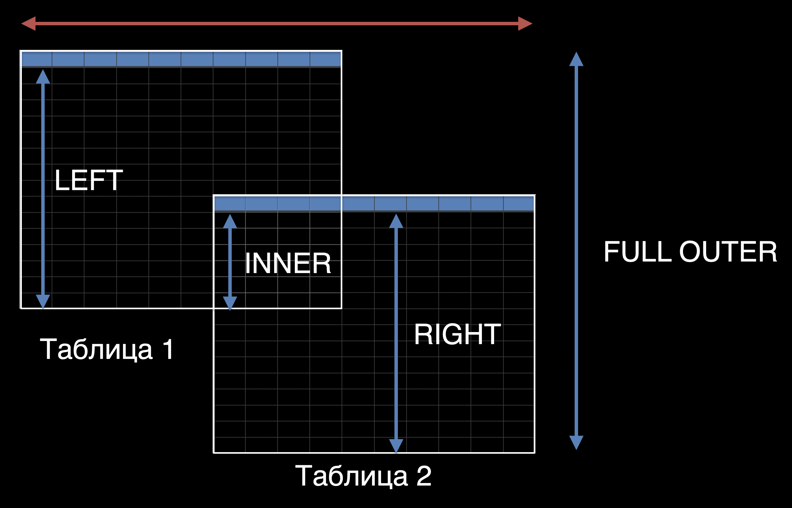

Q&A12(1)
Егор Ерохин
наставникСпринт 12(1)
- Базы данных
- SQL
- Join
- Промежуточное задание
MongoDB
Elasticsearch/Opensearch
inverted full-text indexRedis
remote dictionary serverSQL
- WHERE
- COUNT, SUM, AVG
- GROUP BY
- ORDER BY
- HAVING
- UNION
Join
Промежуточное
- Проектирование БД для Filmorate
- Не пишем код
- Добавить поля в модели Film, User
- Выложить картинку на гитхаб
Ваши вопросы
- MongoDB
- Elasticsearch
- Redis
- SQL операторы
- SQL JOIN
- Промежуточное ТЗ